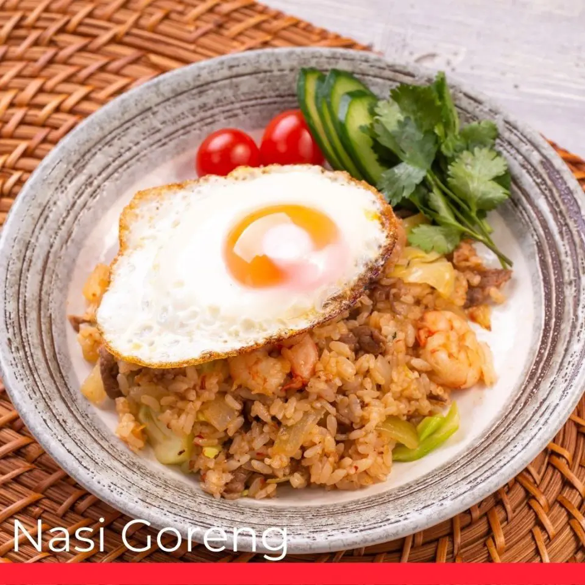

Description about Fried Rice (Nasi Goreng)
While fried rice is famous all throughout Asia, it is one of the most popular comfort foods in Indonesia.
Indonesia’s take on fried rice often involves sweet soy sauce, scrambled eggs, shredded chicken, hot dog slices, as well as pickled cucumber and carrots (acar). If you are looking to try a different version of fried rice, there are many restaurants in Indonesia that offer nasi goreng gila (crazy fried rice), which is much hotter than regular fried rice.
ingredients
- 3 tbsp. sesame oil, divided
- 3 large eggs
- Kosher salt
- 2 carrots, diced
- 3 green onions, thinly sliced, white and green parts divided
- 3 cloves garlic, minced
- 1 tbsp. peeled and minced ginger (from a 1" piece)
- 4 c. cooked long grain rice (preferably leftover)
- 3/4 c. frozen peas
- 3 tbsp. low-sodium soy sauce